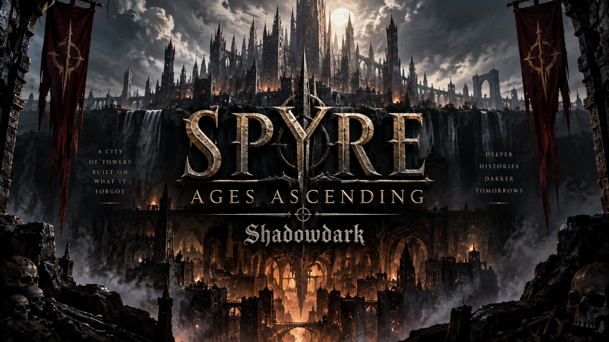
SPYRE
THE SUNLESS STREET
A Shadowdark Adventure
This GM-facing adventure takes characters from shipwreck survivors to first-time delvers beneath Spyre. Its mysteries extend beyond the session; run what the players pursue and leave the rest undisturbed.
Contents
- Adventure Overview
- Running the Adventure
- Scene 1 — Survivors
- Scene 2 — Fool & Fortune
- Scene 3 — Tallow Street
- Scene 4 — Return to Fool & Fortune
- Appendix A — Hutch Quick Reference
- Appendix B — Ragling Attention Tracker
- Appendix C — Ragling Statistics
- Appendix D — Treasure and Rewards
- Appendix E — Hearth & Thorn Consumables
- Appendix F — Tallow Street Quick Reference
- Appendix G — Player Handout Index
- Appendix H — Media and TV Display Reference
Adventure Overview
The characters begin as strangers to Spyre and survivors of a shipwreck. The Silver Wake sank at sea beyond the harbor. Local fishermen pulled the characters from the water and brought them to a wet stone quay beneath the vast, layered city.
They have no local affiliations, patron, reputation, or reliable lodging. Hutch, a weathered curiosity dealer and well-connected Under Hallow broker, meets them at the harbor. He offers warmth, food, basic equipment, and a modest recovery job: enter a recently exposed buried street and bring back useful cartographic material from Vey's Charts & Surveys.
Tallow Street lies beneath later construction. It is a preserved city street, not a sewer or purpose-built dungeon. Its tavern, shops, residence, sealed house, survey office, and buried courtyard hold ordinary remnants of neighborhood life alongside dangers and mysteries. The characters can complete the job without entering every building or fighting the Ragling colony that has nested among Vey's records.
When they return, Hutch pays what he promised, reacts only to what they choose to disclose, and points them toward inexpensive lodging at The Crooked Nail. By the end of the adventure, the characters have moved through three quiet changes:
STRANGERS → SURVIVORS → BEGINNING DELVERS
This is a thematic progression for the GM, not a label to announce to the players.
What the Adventure Is About
- Entering a city whose visible present rests on buried histories.
- Learning that information, maps, and access can be as valuable as gold.
- Making choices about risk, intrusion, salvage, and discovery.
- Establishing a trustworthy local relationship without surrendering agency.
- Leaving several mysteries open so player interest can shape later play.
Adventure Flow
| Scene | Situation | Essential outcome |
|---|---|---|
| 1 — Survivors | The rescued PCs recover on the quay and see Spyre for the first time. | Introduce the characters, establish Alex's absent PC safely, and meet Hutch. |
| 2 — Fool & Fortune | Hutch offers hospitality, explains the Under Hallow, and proposes the recovery job. | Agree to the objective and terms, inspect the map, and outfit the party. |
| 3 — Tallow Street | The PCs descend into a buried neighborhood and explore in any order. | Recover meaningful Vey cartographic material and return alive. |
| 4 — Return | The PCs debrief Hutch, settle payment and salvage, and find lodging. | Establish their first foothold in Spyre without assigning another quest. |
Success and Failure
The core success condition is simple: the party returns with meaningful maps, surveys, journals, route records, property plans, or comparable Vey material. They do not need all four major records. The Master Survey is a strong recovery; the Master Survey plus Survey Ledger is excellent; recovering most of the archive marks them as unusually capable first-time delvers.
An empty-handed retreat is not a campaign failure. Hutch does not pay the recovery fee, but he does not impose debt or punishment. Survival, information, and a continuing relationship remain possible.
Optional discoveries are never mandatory completion gates. The party may leave Sable House sealed, avoid the Raglings, ignore Deepthorn, miss the courtyard stairs, or withhold any discovery from Hutch.
Knowledge the GM Needs
Spyre is an ancient functioning metropolis built over its own history. The Under Hallow is the vast subterranean environment beneath it: buried streets, structures, infrastructure, ruins, caves, and inhabited or forgotten spaces accumulated across many ages. Reliable entrances are rare and valuable. This adventure needs no fuller history of Spyre's eras.
Tallow Street is dry, still, dusty, and completely underground. Later construction crushed or swallowed its upper stories. Its exact abandonment, burial sequence, dates, and era affiliation remain undefined.
Running the Adventure
Shadowdark Assumptions
Use the table's normal Shadowdark rules for initiative, light, darkness, gear slots, encumbrance, morale, and death. The adventure adds only the Ragling Attention track and the location-specific procedures printed here.
- Ask what the players do before calling for a check.
- Roll only when the outcome is uncertain and failure has a meaningful consequence.
- A sound method, suitable tools, and enough time often succeed automatically.
- Important clues are not hidden behind generic Search, Perception, or INT checks.
- Reading and careful work cost time and light.
- Loud shortcuts may raise Ragling Attention.
- Gear and salvage occupy normal slots.
- Telegraph severe danger before damage.
- Combat is often optional.
- Creatures behave according to ecology, fear, curiosity, and protection of young.
- Information is treasure.
Light
Do not track light during Scenes 1–2. Begin normal real-time Shadowdark light tracking when the PCs enter Tallow Street through the warehouse breach.
Tallow Street has no daylight, moonlight, open sky, working streetlights, or naturally illuminated windows. The party's portable light is the only meaningful illumination unless the GM explicitly establishes an exception. Show only what the light reaches; beyond it, darkness remains consequential.
Time
Careful entry, reading records, methodical searching, structural work, and harvesting all consume time. Do not turn every action into a separate clock. Use the normal light timer as the main pressure. Tallow Street has no random encounters.
Gear and Encumbrance
Hutch can provide reasonable mundane equipment available during Shadowdark character generation. Normal gear-slot limits make choices meaningful. Track the larger finds:
- Kraken Black: 1 slot per bottle.
- Vey's survey instrument: 1 slot.
- Master Survey: 1 slot.
- Survey Ledger: 1 slot.
- District Map Case: 2 slots.
- Field Journal: small enough for reasonable shared document storage.
Player Agency
Never assume that the PCs enter every building, fight the Raglings, breach Sable House, open or take the reliquary, harvest Deepthorn, recover every document, discover the courtyard stairs, identify every clue, or tell Hutch everything. Scene 3 is exploratory. Scene 4 is conditional.
Ragling Attention
Track Attention privately across the whole Tallow Street expedition. It begins at 0 and cannot exceed 3.
| State | Across Tallow Street | At Vey's colony |
|---|---|---|
| 0 — Unaware | Environmental evidence only. | The colony does not know the party is present. |
| 1 — Curious | Scratching, distant movement, signs of watching. | One adult may investigate away from the archive. |
| 2 — Following | Raglings shadow the party, appear at light's edge, cross the street, or investigate unattended small items. | Adults know the party is inside and position between intruders and the nest. |
| 3 — Alarmed | The colony knows loud or dangerous intruders are nearby. | Adults are already defensively positioned. |
Meaningfully loud actions usually raise Attention by 1: bashing doors, smashing cases, structural collapse, sustained hammering, loud forced entry, repeated shouting, or combat. Ordinary walking, normal conversation, opening ordinary doors, searching, and exploration do not. Extended quiet exploration may reduce Attention by 1, to a minimum of 0, at the GM's discretion; waiting still consumes light.
Breaching Sable House sets Attention directly to 3. Never count the same noise twice. Attention changes behavior; it never automatically begins combat.
Adventure-Wide GM Principles
Describe consequence before the roll. If speed risks noise or injury, tell the player what is at stake.
Preserve discoveries. Failure can cost time, position, gear, HP, or quiet. It should not erase the only clue or objective.
Let the neighborhood feel inhabited by its past. Domestic objects, business records, repair notes, tabs, and measurements matter. Not every object is occult.
Keep mysteries separate. BM-6, the courtyard stairs, Sable House, Deepthorn, the signet ring, and the ancient symbol do not form one hidden master plot in this adventure.
Scene 1 — Survivors
Purpose
Introduce the PCs through what matters to them. Establish rescue, vulnerability, and a living city. Place Alex's absent character safely in care. Allow a short period of player-led interaction. End when Hutch introduces himself.
Opening Situation
The PCs were passengers on The Silver Wake, which sank at sea well outside Spyre's harbor. Local fishermen rescued them and brought them ashore. Begin after the rescue. The wreck is not visible, and its cause is unknown.
The survivors sit or stand on a wet stone quay in the Harbor District, soaked, cold, exhausted, bruised, and without local status or connections. Work continues around them. Do not replay the wreck, invent a storm or attack, or treat their arrival as prophecy.
Read or paraphrase:
“You're alive.”
Wet stone presses cold through your clothes. Rope creaks against timber; gulls quarrel overhead. The fishermen who pulled you from the sea are unloading beside you. A dockworker calls for room to pass with a crate. The Silver Wake went down far out at sea. You are alive, ashore, and very far from knowing what comes next.
What Survived?
Ask each present player:
You're soaked through, exhausted, and sitting among what's left of your voyage. Before you really take in where you are, there's one thing your character needs to know survived with them. What do you reach for?
Every reasonable item named survives. This is not a trick: no roll, theft, hidden damage, or later reversal. Class-essential equipment also survives or will be replaced before the expedition. The prompt does not mean every other possession was lost.
Then ask:
What do the other survivors see when they look at you?
Let the players respond to one another. Record the meaningful possessions for continuity.
Alex's Character
Alex's PC survived but is unconscious and stable from mundane wreck injuries. A harbor healer examines him and arranges transport to The Lantern House, an infirmary in Spyre.
“He's alive, but he hasn't come round. Exposure, the water, a knock to the head—I can't say yet. We're taking him to the Lantern House. It's an infirmary. He'll be cared for there.”
Tell the players plainly where he is going and that he is receiving care. Keep this beat brief. Do not stage the infirmary, invent a fee or religion, give a definitive diagnosis, or seed a supernatural explanation. He can wake there when Alex joins play.
First View of Spyre
After introductions and the care beat, shift attention beyond the quay.
Beyond the masts, the city climbs into smoke and mist. Roofs crowd beneath more roofs; bridges cross between towers high above the streets. Old arches carry newer walls, and narrow buildings fit into gaps that hardly seem wide enough for them. Windows glow at heights you keep mistaking for the skyline. Somewhere above it all, bells are ringing.
Display S01-LOC-DOCKS-01 after the introductions and care beat. The ships shown are ordinary harbor traffic, not The Silver Wake.
Free Play
Ask “What do you do?” Allow roughly 10–20 minutes as interest warrants. The PCs may talk, inspect possessions, ask about their companion, thank rescuers, count resources, help with ordinary work, seek practical information, or simply take in the harbor.
No check is needed to learn that they are in Spyre's Harbor District, that fishermen rescued them, or that no one here knows why the ship sank. Do not give damage, conditions, an exhaustion subsystem, random equipment-loss rolls, or XP for surviving the wreck.
If useful, the harbor healer is direct and practical; a rescuing fisherman knows only where he found the survivors; a dock clerk may record names and the ship without inventing legal trouble. These people have work of their own and no secret plot.
Hutch in the Background
Mention a weathered middle-aged man trading an amiable joke with a dockworker while examining ordinary cargo. He belongs here. He was not waiting for the wreck and is not selecting chosen heroes.
When interaction reaches a natural lull, he approaches.
“First time in Spyre? Most people arrive a little drier. I'm Hutch.”
End Scene 1. Do not offer the job yet.
Scene 1 Mechanics
- No HP damage from the wreck.
- No exhaustion or trauma subsystem.
- No random loss of equipment.
- One reasonable meaningful possession per present PC survives automatically.
- Class-essential equipment survives or is replaced before Scene 3.
- No unnecessary checks.
- No XP solely for surviving the wreck.
- Do not track light.
Scene 2 — Fool & Fortune
Purpose
Let the PCs meet Hutch as a person before he becomes their broker. Give them warmth, food, and room to recover. Establish the Under Hallow, present a clear job and fair terms, outfit the party, and end as they depart for the warehouse access.
Hutch
Hutch is human, in his late forties or early fifties, weathered, intelligent, likable, funny, socially somewhat seedy, observant, and extremely well connected. He knows dockworkers, merchants, salvagers, criminals, adventurers, and ordinary residents. His legitimate business is Fool & Fortune, a curiosity, salvage, antique, map, tool, jewelry, and nautical-goods shop. His deeper trade is brokering people, information, access, expeditions, salvage, and buyers.
He is neither sinister nor omniscient. He was conducting his own business before the rescue. He sees people having an extraordinarily bad day.
Display S01-NPC-HUTCH-01 when Hutch is properly introduced.
The Initial Conversation
Resume after Hutch gives his name. He offers a little bread and asks two or three questions suited to what the players have already said:
- First time in Spyre? Where were they headed?
- Do they know anyone here?
- What survived the wreck?
- What are they good at?
- What do they plan to do now?
Give each player room to answer or decline. Hutch's private conclusion is simple: they belong to nobody in Spyre. They have no local guild, patron, faction, political allegiance, reputation, or Under Hallow affiliation. That makes them vulnerable, but sometimes useful. He does not say this aloud.
If the moment fits:
“Shipwreck's a funny thing. Yesterday you had somewhere to be. Today you've got nowhere to go.”
Invitation to the Shop
Hutch offers somewhere warmer to sit.
“You're welcome to keep sitting here. Dockmaster eventually charges rent, though.”
The fee is a joke. Hospitality is not acceptance of work. If the PCs decline, he gives them the shop name and leaves the invitation open.
If asked about the shop's name:
“Depends whether you're buying or selling.”
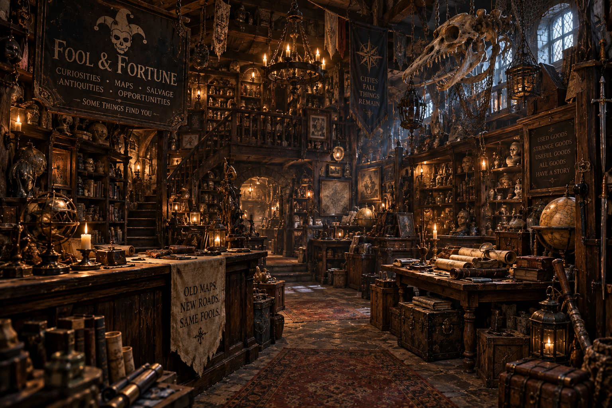
Display S02-LOC-FOOL-FORTUNE-01 when the PCs enter.
The door closes, and the harbor becomes a noise on the other side of a wall. Inside, the air is warm. Hutch clears a place to sit without seeming to improve the clutter at all.
Offer bread, a warm drink, cloths for drying, and seats. Let the PCs examine ordinary stock or talk. Do not make each curiosity a hook. Hutch has no answer for the wreck and no new medical information about their companion.
The Turn Toward Work
When the PCs have had room to settle, Hutch can say:
“Suppose there are two kinds of people in Spyre.”
“People who've got something somebody wants... and people willing to go get it.”
If asked which kind he is:
“Middleman.”
He connects needs and opportunities. He does not threaten people into service.
Introducing the Under Hallow
“Spyre goes down almost as far as it goes up.”
If asked what lies below:
“Depends how far down you go.”
If pressed:
“Cellars. Sewers. Old streets. Older streets. Tombs. Temples. Places people forgot. Places people worked very hard to forget.”
“We call it the Under Hallow.”
Stop there. The PCs will learn by entering it.
The Tallow Street Job
Recent structural work in a warehouse near the harbor broke through apparent foundation masonry into empty space. Clearing the opening exposed descending stairs and signs of a buried street. Hutch has arranged permission to use the warehouse access; its owner or foreman knows to expect his party.
Hutch possesses a later copied survey/property record. It names Tallow Street, Vey's Charts & Surveys, The Gilded Kraken, Hearth & Thorn, Marlowe's Fine Goods, The Broken Compass, and one unidentified structure. The copy also marks the modern warehouse access and current collapse.
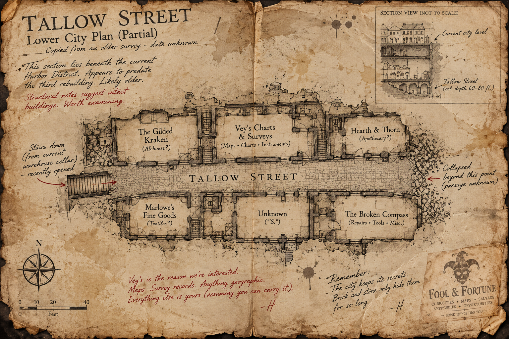
Give the players S02-HANDOUT-TALLOW-MAP-01. Its depth and “third rebuilding” notes are in-world claims, not established history.
Objective: enter the exposed area, locate Vey's Charts & Surveys, and recover surviving maps, surveys, journals, route records, property plans, geographic notes, or similar useful cartographic material.
Hutch believes records may survive. He does not know the street's present condition, whether every map detail remains accurate, or what now occupies the area. He describes it as a modest exploratory recovery job with real structural and underground risk. Retreat is allowed.
Old information can be more valuable than old gold.
Terms
| Term | Agreement |
|---|---|
| Payment | 10 gp per participating PC, paid if the group returns with at least one meaningful piece of Vey cartographic/survey material. This is one flat job payment, not payment per document. |
| Contracted material | Readable maps, surveys, journals, route records, property plans, or similar Vey geographic material. Historical information need not match modern streets. |
| Other salvage | “What I asked for is mine. What I didn't ask for is yours.” Obvious third-party ownership can be clarified rather than treated as permission to steal. |
| Empty-handed return | No recovery fee, debt, or punishment. |
| Equipment | Reasonable used mundane adventuring gear, supplied without deduction, collateral, or repayment trap. |
| Timing | No invented deadline. The PCs may prepare and withdraw from danger. |
Allow questions and negotiation. Record any openly agreed change. If they refuse, do not force the adventure through punishment.
Outfitting
Review existing sheets and Scene 1 possessions. Hutch can provide essentially any reasonable mundane equipment available during Shadowdark character generation: torches, lanterns and oil, rope, chalk, spikes, crowbars, sacks, backpacks, basic tools, ordinary weapons, armor, shields, waterskins, and similar expedition gear.
Use normal gear slots and encumbrance. Hutch does not provide magic, luxury goods, exotic treasure, or unlimited consumables. Ask who carries light, fuel, rope, and heavy tools. Do not turn preparation into a shopping minigame.
End the scene after the PCs freely accept the job, understand the objective and terms, inspect the map, choose equipment, and depart toward the warehouse.
Scene 3 — Tallow Street
Purpose
Tallow Street is an urban mini-sandbox built around temptation versus objective. The party may explore in any order. Public life, commerce, a private home, professional work, ecological occupation, and supernatural containment all survive in the same buried neighborhood. Not every mystery belongs to Hutch's job.
The core objective is Vey's Charts & Surveys. No optional building, combat, or secret is required.
From Harbor to Under Hallow
The PCs walk a short distance through the active Harbor District to a working warehouse. Its owner or foreman expects them.
“You're Hutch's lot? Cellar. Back wall. Don't touch anything that isn't already broken.”
The cellar is mundane. Recent structural work breached newer masonry and exposed older stonework with stairs descending 20–30 feet from the cellar. Workers cleared enough to see through, but have not meaningfully explored.
The PCs squeeze through and descend. The breach and descent require no checks.
Their light finds cobblestones.
Buildings stand on both sides of a buried street. Their upper floors vanish into crushed masonry and the foundations of later construction. Doorways open where no surface street remains. Dust softens every edge. There is no wind, rain, sky, or sound from the harbor—only the reach of the party's light and darkness beyond it.
This is a buried city street. It is not a sewer, cavern, or dungeon corridor. Begin real-time light tracking now.
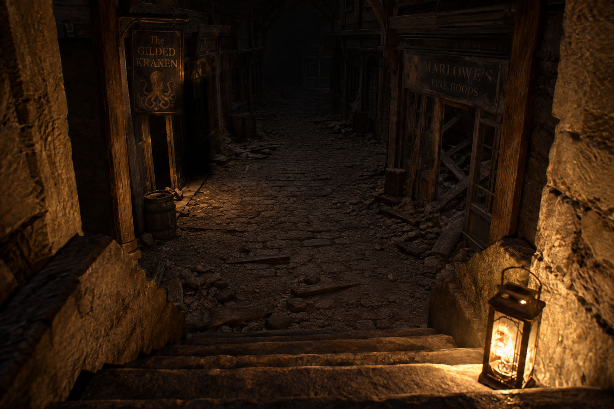
Display S03-LOC-TALLOW-01 at the first street reveal.
Street Layout
The party enters from the west. The east end is blocked by the current collapse.
| North side, west → east | South side, west → east |
|---|---|
| The Gilded Kraken | Marlowe's Fine Goods |
| Vey's Charts & Surveys | No. 17 Residence |
| Hearth & Thorn | Sable House / “S.” on the player map |
| The Broken Compass |
The Master Survey is approximately 400 years old relative to the campaign present. It depicts the functioning neighborhood and its continuation, but not the modern warehouse access, western breakthrough, present eastern collapse, or the older stairs behind Vey's courtyard. Its age does not establish an exact date, era, or calendar origin.
Exploration Order
Present the street and ask where the players go. Do not number the locations aloud. Doors, rooms, clutter, passages, stairs, and chambers may be represented with the available terrain without turning illustrative art into an exact tactical map.
Location Summary
| Location | Table role | Primary choice |
|---|---|---|
| Gilded Kraken | Careful searching, warning, environmental danger | Quiet entry and search versus speed and noise |
| Marlowe's | Valuable salvage under unstable structure | Careful extraction versus quick risk |
| No. 17 | Human context and neighboring unease | How far to intrude into a private home |
| Sable House | Optional containment mystery | Whether to breach a deliberate seal |
| Hearth & Thorn | Useful medicines and Deepthorn | Take, sample, or leave an unexplained living root |
| Broken Compass | Ragling contact and Vey instrument | Investigate disturbed stock and a downward-pointing tool |
| Vey's | Job objective and colony | Recover records without threatening young |
| Rear courtyard | Map discrepancy and deeper history | Understand the clue and defer serious excavation |
The Gilded Kraken
Immediate Impression
A former alehouse stands behind filthy windows and a swollen front door. Its hanging sign shows a gilded kraken coiled around a drinking vessel. Inside, dust covers old wood, tables, chairs, cups, crockery, bar fittings, and abandoned bottles. One overturned chair is ordinary disorder, not proof that everyone vanished during dinner.
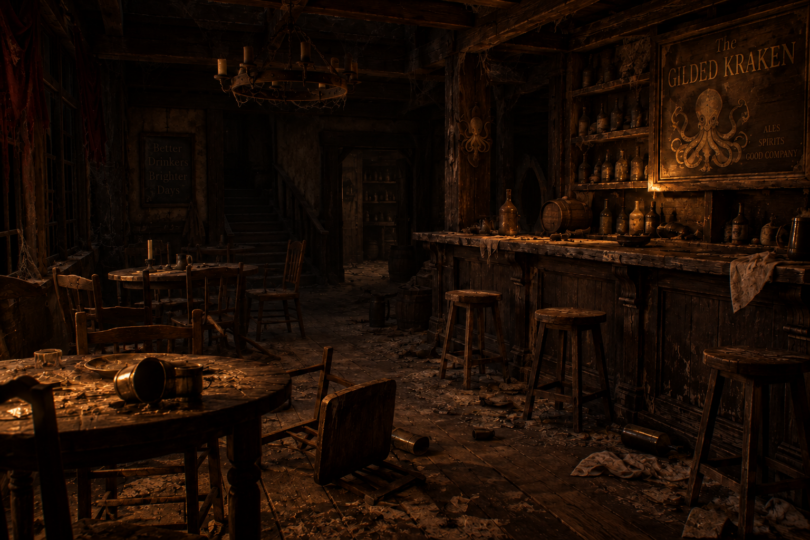
Display S03-LOC-KRAKEN-01 on entry.
Key Features and Discoveries
| Area | Find |
|---|---|
| Common room | One dropped old silver coin with an unfamiliar, undefined ruler; approximately 2 gp collector value. |
| Behind the bar | Three intact wax-sealed bottles of Kraken Black, 10 gp each, 1 slot each. |
| Till | Corroded old coins worth approximately 5 gp total to a collector. |
| Lower cabinet | Ruined towel, paper, cork, candle wax, irregular dust trails, and at least one modern material such as blue thread or grain-sack fabric. |
| Customer tab slate | Optional: “Mara — 7”, “Jonn — 3”, “Old Pell — PAY FIRST”. These names establish no modern family link. |
The mixed-age cache suggests that small creatures can reach inhabited modern Spyre, but does not expose a usable route.
Cellar
A rotten floor or stair leads to stone walls, bottle racks, barrels, crates, and an old drain. Telegraph sagging timber, broken boards, and rot before anyone risks a fall. There is no secret cellar passage.
Meaningful exploration automatically reveals words scratched into wall or timber:
DON'T OPEN THE STREET DOOR
The warning refers to Sable House's street-facing door. Its author, date, and circumstances remain unknown. Give players the words, not the explanation.
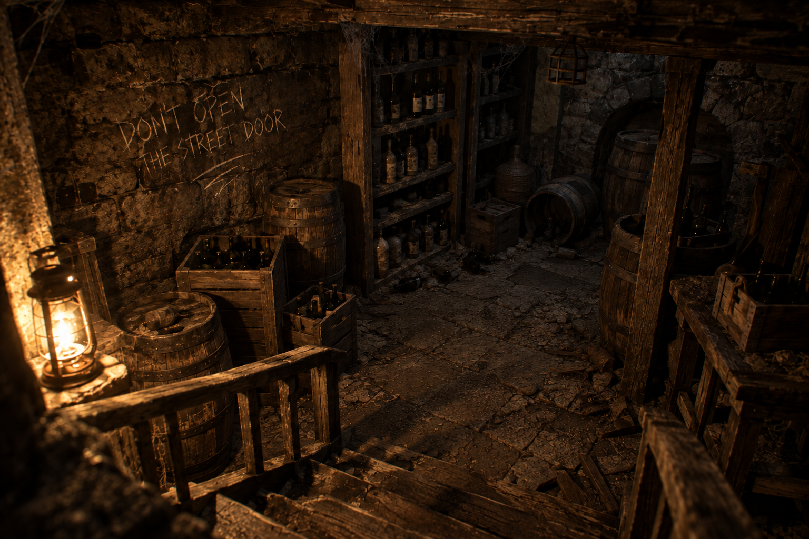
Display S03-LOC-KRAKEN-CELLAR-01 only when the warning is encountered.
Mechanics
- Force front door: automatic with proper effort or tool; immediate; Attention +1.
- Careful entry: automatic with suitable tools and time; no Attention increase.
- Quick and quiet: DC 12 STR. On failure, choose more time or loud force; the roll never denies entry.
- Search: players describe where they look; no generic search roll.
- Rotten stairs: a reasonable bypass succeeds. Ignoring the warning signs requires DC 12 DEX; failure causes 1d4 damage and Attention +1.
- Warning: found automatically through meaningful cellar exploration; no magical effect or save.
Kraken Black is mundane rare liquor. Total potential value here is approximately 37 gp.
Marlowe's Fine Goods
Immediate Impression
Decorative tile, brass fixtures, dark counters, display cases, and fine fittings survive beneath an upper floor collapsed diagonally into the shop. A partly buried jewelry case catches the party's light. The unstable building is the primary danger.
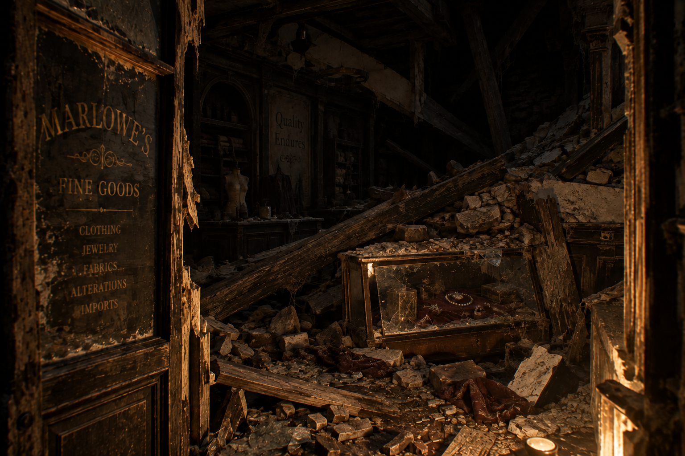
Display S03-LOC-MARLOWES-01 on entry. Use the listed treasure rather than incidental objects in the art.
Jewelry
- Mundane silver necklace: 15 gp.
- Finely made mundane hairpin: 10 gp.
- Old, heavy, worn signet ring with a distinctive but undefined heraldic device: 25 gp apparent antique value.
The ring is secretly connected to one of Spyre's vampire families, but the family, heraldry, and exact provenance are undefined. Give no supernatural aura or easy vampire cue.
Records and Safe
Ruined business records concern orders, measurements, invoices, fine clothes, jewelry repairs, fabrics, accessories, and alterations. An optional notation reads:
H. Vale — ring resizing. NOT COLLECTED.
H. Vale is unidentified.
A partly exposed locked floor safe contains obsolete deeds, receipts, correspondence, financial instruments, and property records. One surviving document refers to a Spyre street that still exists but a property number that apparently does not. Keep the address undefined. No matching key is present in the adventure.
Structural Extraction
Ask how the PCs reach the case. A sensible careful plan with suitable tools and time succeeds: pry access, cut, remove glass, brace debris, or reach around the load.
- Quick extraction without addressing the structure: DC 12 DEX.
- Failure: the structure shifts; Attention +1; then DC 12 DEX to avoid 1d6 falling-debris damage.
- Clearly show worsening instability.
- Only if a PC knowingly continues reckless excavation after that warning: DC 15 DEX, failure 2d6 damage.
The severe hazard is a new informed choice, never an automatic cascade from the first failure.
Safe Mechanics
- Pick with DC 15 DEX and thieves' tools.
- Proper heavy tools plus time open it automatically and cause Attention +1.
- The contents are records, not a cash jackpot.
No. 17 Residence
Immediate Impression
A narrow home stands between Marlowe's and Sable House. A simple metal 17 marks it. The residence shares a wall with the sealed property. Exploring should feel like entering someone's abandoned private life, not opening another treasure room.
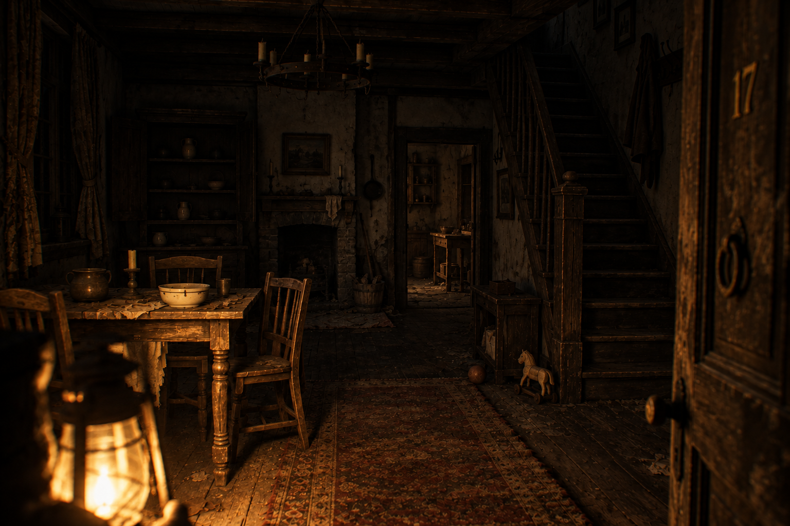
Display S03-LOC-SEVENTEEN-01 on entry.
Ground Floor
The cramped sitting and dining space holds a hearth, table, two chairs, cupboard, steep stairs, chipped bowl, old pot, repaired chair, broken comb, and child's wooden toy. The family deliberately but incompletely abandoned the home. Money, silverware, packed clothes, and obvious valuables are gone. Do not stage an interrupted meal.
The stair frame bears three height marks:
Elsie — 6
Elsie — 7
Elsie — 8
The marks stop there. They do not establish Elsie's death.
Elsie's Room
A tiny bed, chest, crude toy or doll, and drawings survive upstairs. Most show family, the street, the tavern sign, Marlowe's, boats, and animals. One dark adjoining house appears repeatedly. One drawing reads:
PEOPLE NEXT DOOR
Her bed rests against the shared wall. At child height are scratched shapes resembling copied writing or symbols. They are not readable letters or tally marks. A surviving adult correspondence fragment includes:
“…your complaints concerning the adjoining property…”
It names no ghosts, curse, witch, voice, or monster.
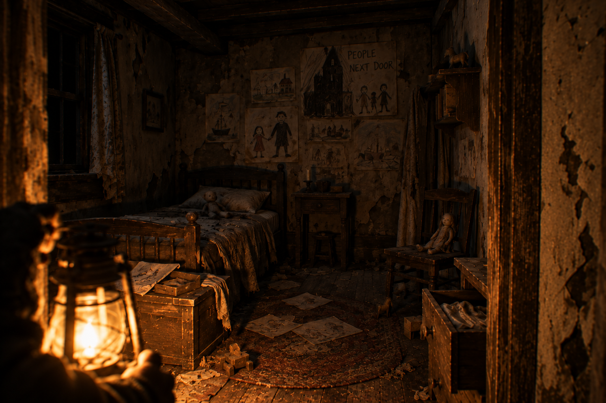
Display S03-LOC-ELSIE-01 when the room is examined.
Ragling Behavior and Discovery
Minor Ragling traces downstairs almost vanish near the shared wall and upstairs. At Attention 2+, a Ragling may watch from the doorway but refuses to cross toward the Sable-adjoining area. Do not roll initiative.
Meaningful examination automatically reveals the drawings, wall scratches, and correspondence. The home contains effectively 0 gp in conventional treasure. Do not price Elsie's toy. Information and human context are the reward.
Sable House
Optional Exploration
Sable House is not Hutch's objective. On his map it is only Unknown / “S.” Do not give the players its name merely for seeing the facade. The older structure's street entrance is deliberately bricked shut; its windows are blocked. Raglings leave no nests or droppings near it and will not willingly enter.
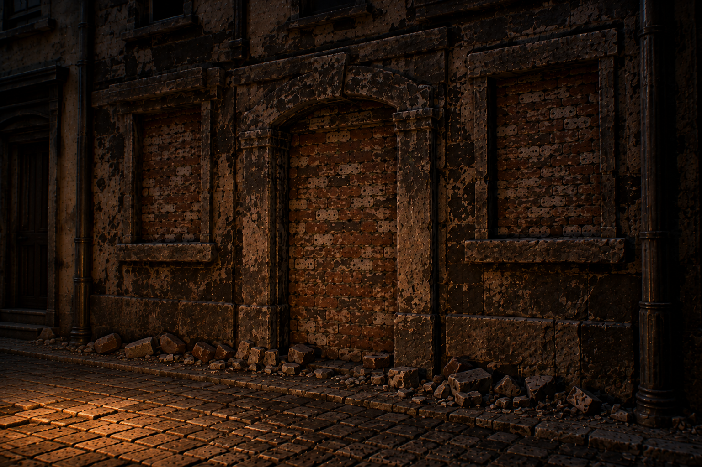
Display S03-LOC-SABLE-SEALED-01 when the facade is inspected.
Entry occurs only if the party chooses to breach the street-facing seal. With proper tools and effort, breaking the masonry takes about 10 minutes. It requires no roll and is extremely loud: set Ragling Attention directly to 3 — Alarmed.
Interior
The building contains a former occult and alchemical workspace, personal belongings left inside, improvised containment, skeletal remains, papers, chains, floor markings, and a reliquary. The scene shows deliberate isolation and containment; it does not explain the people or events involved.
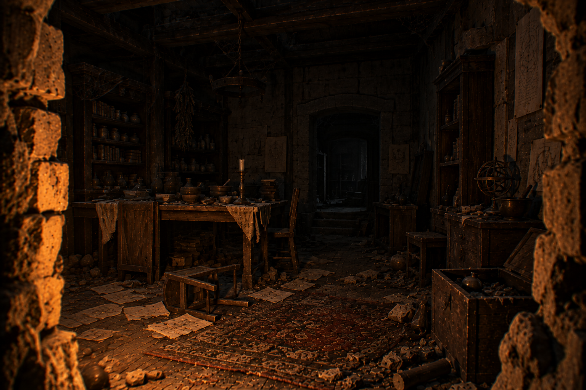
Display S03-LOC-SABLE-INTERIOR-01 after voluntary entry.
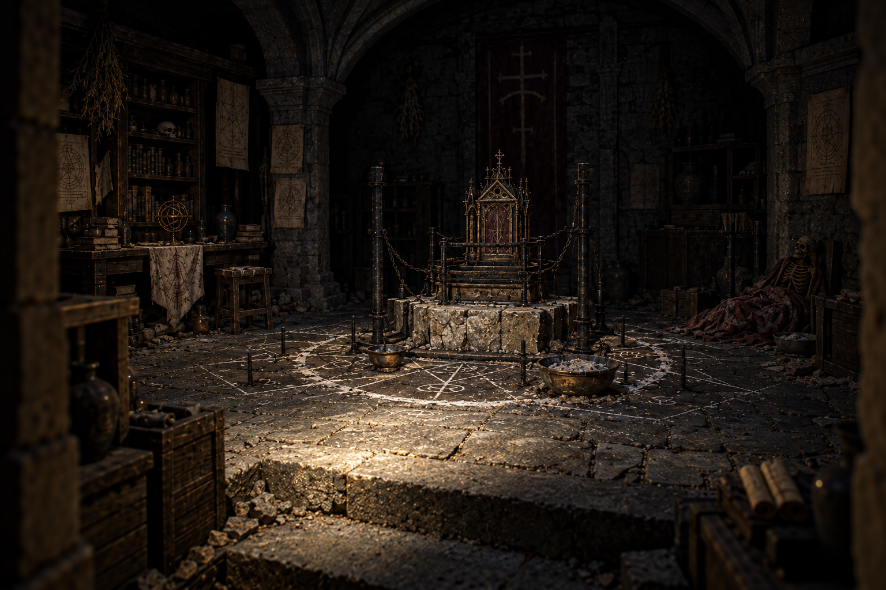
Display S03-LOC-SABLE-CONTAINMENT-01 only when the containment space is encountered. Candles are unlit remnants.
GM Truth
Near the end of Tallow Street's occupation, the occupant was sealed inside with her belongings after the reliquary's contamination threatened to spread. Her intent, understanding, identity, consent, guilt, victimhood, fate, and exact role remain unresolved. The skeleton and skeletal hand-like relic do not identify her. The reliquary is not a mirror, and its ultimate origin is unknown.
Containment State
Track this separately from Ragling Attention.
| State | Trigger | Effect |
|---|---|---|
| SEALED | Initial state. | The house remains isolated. |
| DISTURBED | The street entrance is opened. | Psychic echoes, temporal impressions, sensory effects, or environmental disturbances may occur without automatic penalties. |
| BREACHED | The reliquary is opened, or a character deliberately damages, removes, cuts, breaks, dismantles, or meaningfully interferes with its obvious containment elements. | Everyone present perceives a significant change. Opening also triggers the Bound check below. |
Containment elements include the established wire, seals, nails, bindings, powders or materials, and other deliberate components around the reliquary. Make their purpose visually apparent before interference becomes consequential.
Ordinary interaction with the closed reliquary does not cause BREACHED. A character may touch, pick up, carry, wrap, bag, visually inspect, or transport it while closed. Such contact can still require the DC 12 WIS contamination check below where appropriate.
Closed reliquary: handling or transporting it may expose a character to contamination, but does not breach containment. Only opening it or deliberately interfering with its containment elements causes BREACHED.
Contamination
Simply entering does not curse a character. Handling occult remains, breaking inner containment seals, touching the reliquary, or comparable direct exposure may require DC 12 WIS. Handling the closed reliquary requires this check.
Opening the reliquary uses the DC 15 WIS Bound check below instead of an additional DC 12 contact check.
On failure, roll 1d4:
| d4 | Effect |
|---|---|
| 1 — Whispers | Disadvantage on the next WIS check. |
| 2 — Dislocation | Disadvantage on the next initiative roll. |
| 3 — Borrowed Memory | A disturbing or informative fragment from the occupant's experience; no numerical penalty. Keep within established facts and do not resolve her identity, motives, consent, or fate. |
| 4 — Marked | Faint black or copper discoloration at the contact area; no immediate mechanical penalty. |
Temporary effects last until a rest outside Sable House where applicable. “Next check/roll” effects apply to the next qualifying roll. Do not invent repeated-exposure stacking.
Reliquary
Display S03-OBJ-RELIQUARY-01 only when the object is encountered. The art does not identify the hand, religion, or curse.
Opening the reliquary changes containment to BREACHED and requires DC 15 WIS. On failure, the character becomes Bound to the Reliquary. Deliberately interfering with containment also causes BREACHED, but does not independently impose this DC 15 opening check unless the reliquary is opened.
Bound does not possess the character, dictate behavior, or remove player agency. The character cannot willingly abandon the reliquary for an extended period without intrusive thoughts, dreams, and a growing desire to recover it. Separation time, escalating penalties, cure, and long-term progression are deliberately undefined.
Taking the closed reliquary is possible. It is dangerous cargo, not automatic punishment. It has no established GP or XP value. Do not resolve its origin or long-term consequences in this adventure.
Hearth & Thorn
Immediate Impression
The former apothecary contains shelves, bottles, jars, dried ingredients, work surfaces, storage, and remnants of medical and herbal practice.
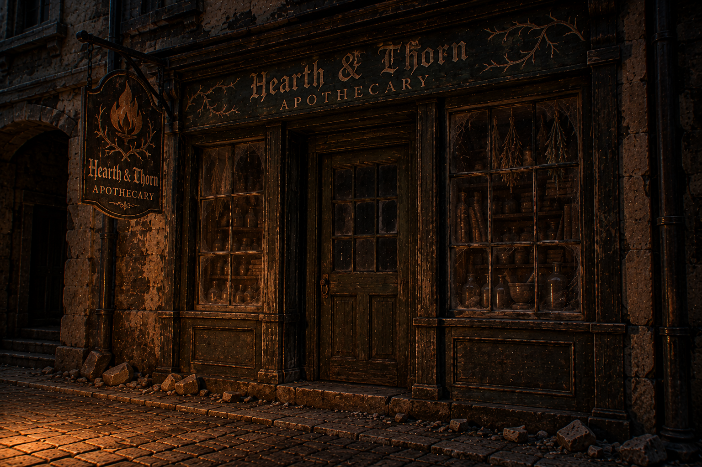
Display S03-LOC-HEARTH-EXTERIOR-01 at the facade.
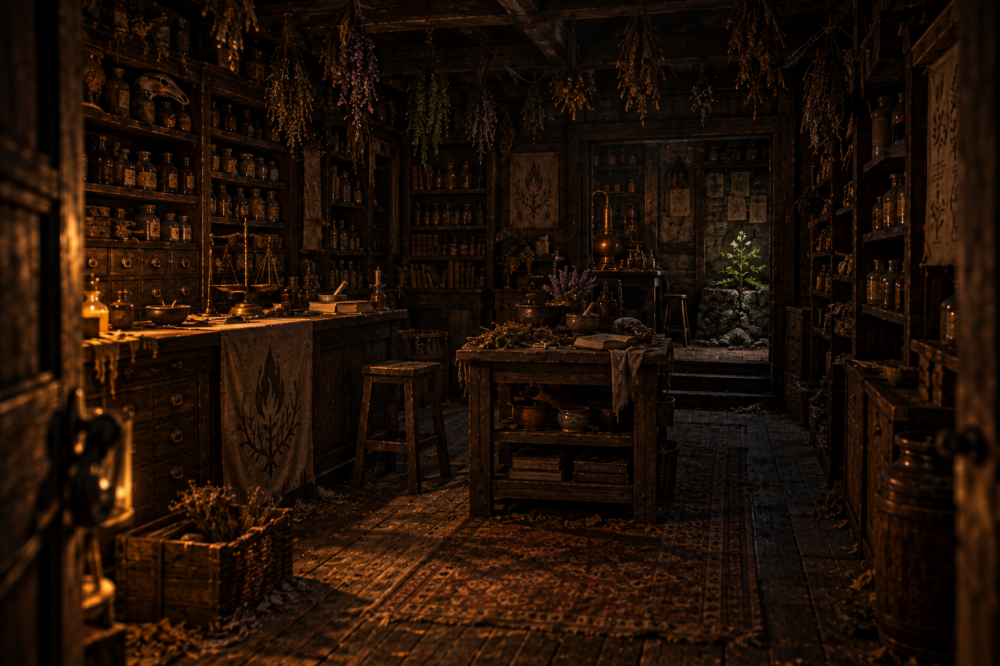
Display S03-LOC-HEARTH-INTERIOR-01 after entry. The visible plant does not conclusively depict Deepthorn.
Medicine Cabinet
Meaningful searching finds the cabinet automatically.
- Pick: DC 12 DEX with thieves' tools.
- Force: DC 12 STR; failure destroys one surviving preparation. Decide which bottle is exposed to the risk before rolling.
| Preparation | Effect |
|---|---|
| Redwort Restorative | Heal 1d6 HP. |
| Viper's Mercy | Immediately ends one mundane poison affecting the drinker. |
| Clearblood Tonic | For 1 hour, advantage on the next CON check against disease or poison. |
| Spoiled Black Draught | Sediment, pressure, odor, and age reveal spoilage without a check. If consumed: DC 12 CON; failure 1d6 damage, success causes sickness but no damage. |
| Nightroot Elixir | For 1 hour, the drinker alone sees through complete nonmagical darkness to Near. It does not illuminate the area, help companions, or defeat magical darkness. |
No sale values are established.
Deepthorn
A living root or branch penetrates the buried shop and disappears through masonry. The apothecary notes call it Deepthorn.
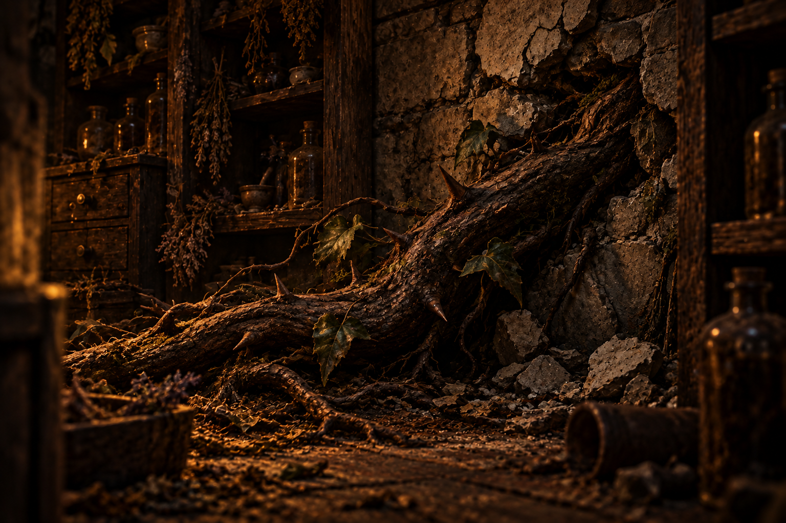
GM truth: Deepthorn is one extension of a much larger supernatural tree elsewhere in the Under Hallow. The parent grew when a wooden stake that killed a vampire took root and became a supernatural tree. The vampire, tree's location, history, extent, and broader properties remain undefined. Deepthorn is not connected to Marlowe's ring. Following the root requires a dedicated future excavation; it cannot be done during this expedition.
Careful harvesting with a suitable blade yields 1d4 viable cuttings, no check. A fresh cutting chewed by a character grants 10 rounds of supernatural perception of living creatures within Near, even in complete darkness, provided no solid barrier intervenes. This is not ordinary vision, heat vision, aura sight, Detect Magic, or x-ray vision. Untreated cuttings lose this property after approximately 24 hours. Raglings refuse Deepthorn.
The Broken Compass
Immediate Impression
This former repair and instrument shop is broad enough for workbenches, cabinets, measuring chains, compasses, survey tools, clockwork, navigation instruments, and repair stations. Most equipment is corroded or damaged. Open drawers, displaced dust, scattered small objects, and crawlspaces show recent Ragling activity.
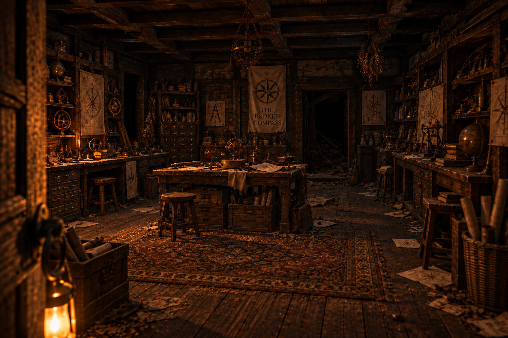
Display S03-LOC-COMPASS-01 on entering.
Possible First Ragling
If the party has not already clearly seen one, a Ragling may watch from beneath or behind furniture: large dark eyes, whiskers, and long foreclaws gripping an edge. It freezes, then bolts through a human-inaccessible gap. Do not roll initiative automatically.
Display S03-CRE-RAGLING-01 only after a Ragling has been clearly seen.
Cache
A nest-like cache contains paper, twine, leather, candle wax, cloth, feathers, wood shavings, old coins, a brass key, a small silver chain, buttons, glass, tools, and a piece of modern cloth. The mixture suggests access to inhabited modern Spyre but reveals no human route. The brass key has no assigned lock.
A thorough search yields 1d6 gp total in old coins and small valuables. Do not price each button or tool separately.
Vey's Survey Instrument
The key find is a high-quality brass survey instrument associated with Vey's. It resembles a compass but is fundamentally a surveying tool. It persistently indicates downward.
Repair tags include:
VEY'S — vertical deviation persists.
Needle continues to indicate downward orientation. Replaced pivot. Rebalanced card. No improvement.
Tested against three other compasses. No corresponding deviation.
The instrument occupies 1 gear slot and has no established conventional sale value. Experimentation automatically shows that it does not point north, rotating it does not correct it, and it continually indicates beneath the neighborhood. No INT check.
Vey calibrated it against a fixed survey benchmark below Tallow Street. It is not mechanically broken, but the exact nature and location of BM-6 — LOWER DATUM remain unresolved. It does not point to Sable House, Deepthorn, or the courtyard stairs.
Vey's Charts & Surveys
Immediate Impression
The business name remains readable. Tracks, droppings, shredded paper, chewed leather, and disturbed doors or windows reveal heavy Ragling use.
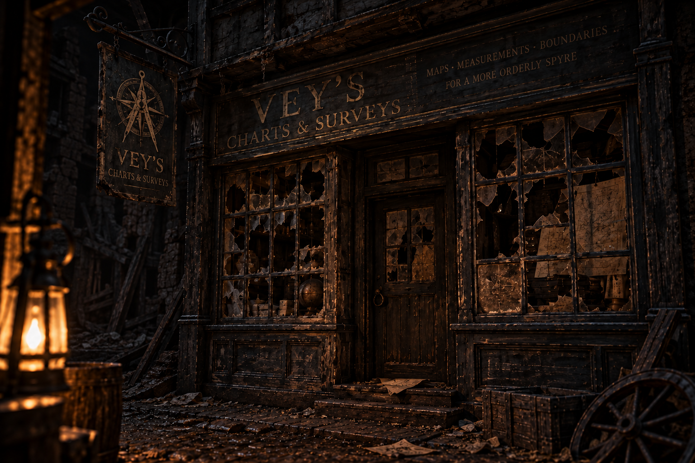
Display S03-LOC-VEY-EXTERIOR-01 on approach.
Inside are a customer counter, large drafting tables, map cabinets, survey equipment, rolled charts, property records, bound books, and wall maps. Drawers hang open; maps and leather cases have been dragged toward the rear archive.
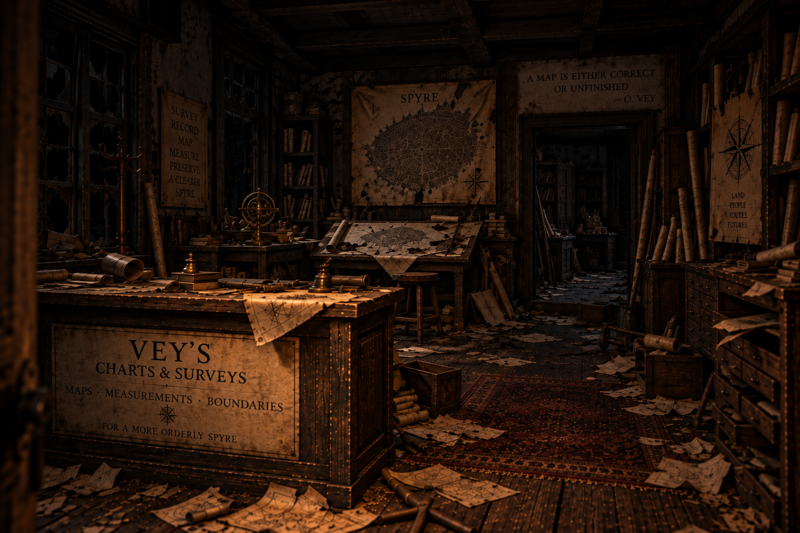
Display S03-LOC-VEY-INTERIOR-01 on entry. Incidental wall maps do not establish canonical city geography.
The Colony
The rear archive holds approximately three normal adults, young, and one mature matron. The nest contains shredded parchment, canvas, leather, cloth, hair, wax, dried vegetation, map fragments, and some intact records.
The Raglings protect their young, not Hutch's maps. Adults begin with warning behavior: chittering, posturing, blocking access, and watching. They do not automatically attack. Three adults plus the matron can be extremely dangerous to fresh PCs; communicate danger and room to retreat.
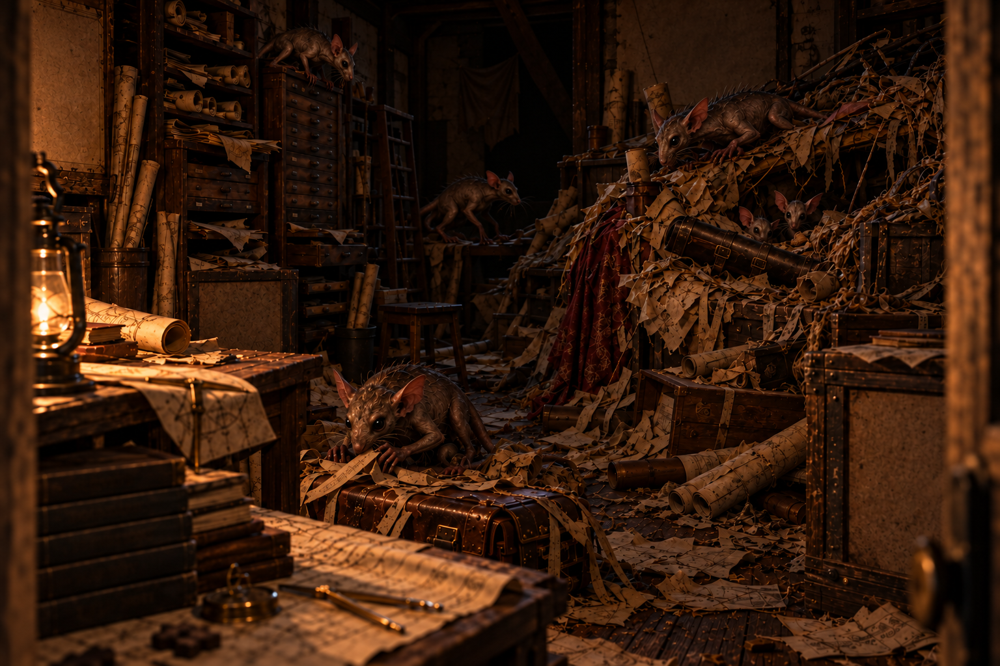
Display S03-LOC-VEY-NEST-01 only when the rear colony is reached.
Display S03-CRE-MATRON-01 only if the matron appears.
Nonviolent Solutions
- One full ration thrown or offered away from the nest draws one normal adult away without a check.
- Several rations or an especially attractive pile may manipulate more adults.
- Paper, cloth, leather, wax, string, and similar nesting material can distract them.
- Deepthorn is not suitable bait.
- Careful retrieval, observation, intimidation, retreat, diversion, and driving them off can work.
- Good plans work according to the situation; do not create an Animal Handling minigame.
- Combat remains possible if the PCs attack, corner adults, destroy the nest, or threaten young.
The matron primarily emerges or escalates when the young face serious danger. Even she may offer retreat before attacking.
Important Records
| Record | Position and slots | What it reveals |
|---|---|---|
| Tallow Street Master Survey | Professional record; 1 slot. | Functioning historical layout, boundaries, benchmarks, and continuation beyond the accessible section. Omits modern access/collapse and the older courtyard stairs. |
| Vey's Survey Ledger | Thick field book; 1 slot. | Measurements, boundaries, corrections, benchmarks, and BM-6 — LOWER DATUM context. |
| District Map Case | Partly incorporated into or near the nest; 2 slots. | Six to ten rolled maps of nearby buried streets and structures. Those locations are not designed here. |
| Vey's Field Journal | Dangerously close to the young; small. | Observations, discrepancies, jobs, a BM-6 reference, and one copy of the ancient symbol followed by ?. |
The less disturbed office contains a desk, survey journals, correspondence, property records, and map storage, but the Field Journal specifically lies near the young. Do not require all four records and do not reduce retrieval to a single DEX roll.
Reading costs time, not an INT check. Basic contents are automatic. The Master Survey reveals the historical layout and visibly includes the BM-6 benchmark label; the Survey Ledger provides its useful context. Records plus the instrument establish their connection automatically. The Field Journal's symbol and question mark are obvious on examination.
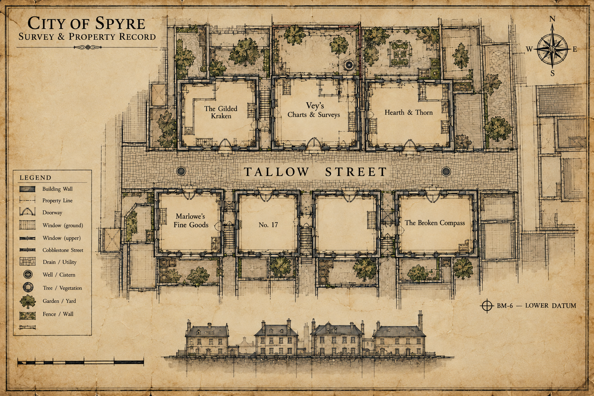
Give the players S03-HANDOUT-VEY-SURVEY-01 when recovered and examined. The Sable property remains unnamed, and BM-6 remains unexplained.
Orin Vey
The surviving work presents Orin Vey as a meticulous, somewhat obsessive professional interested in discrepancies between records and the physical city. Nothing here establishes him as a major historical figure.
“A map is either correct or unfinished.”
Hutch's request remains broad. Any meaningful Vey geographic material completes the job.
“Paper's heavy. Use your judgment.”
Rear Courtyard and Older Stairs
The Buried Courtyard
A rear door from Vey's opens into a private courtyard approximately 25–30 feet across, built over for centuries. It has no sky or daylight. Portable light reveals stone paving, drainage, cistern or rain-barrel remnants, old planting areas, masonry, and debris. Raglings use parts of the courtyard but do not descend the older stairs.
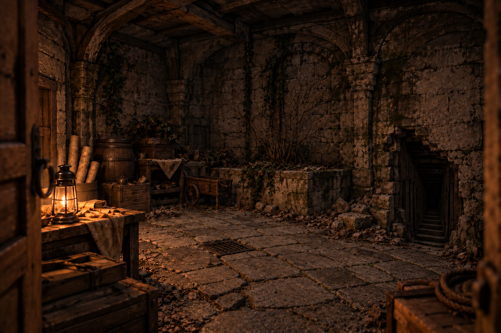
Display S03-LOC-VEY-COURTYARD-01 after the party takes the rear door. Surviving greenery establishes no magical explanation.
The Discrepancy
Vey's survey shows a solid rear boundary with no passage or stairs. The physical wall incorporates larger, older dressed stones. Settling and damage expose an opening and stairs that descend about 15 feet, reach a small landing, and turn.
Comparing the survey with the courtyard automatically reveals the discrepancy. Deliberate inspection also reveals the older masonry without a check. Clearing loose material takes several minutes and no Attention; hammering or demolition follows the normal loud-action rules.
Vey went down these stairs and copied the symbol from the landing into his journal. He then drew a wall where the stairs should have appeared. His omission was almost certainly deliberate. Why remains unknown.
The Symbol
When the landing is illuminated, the carved geometric symbol is automatically visible. A copy in Vey's Field Journal bears a question mark. The match is automatic; no INT check.
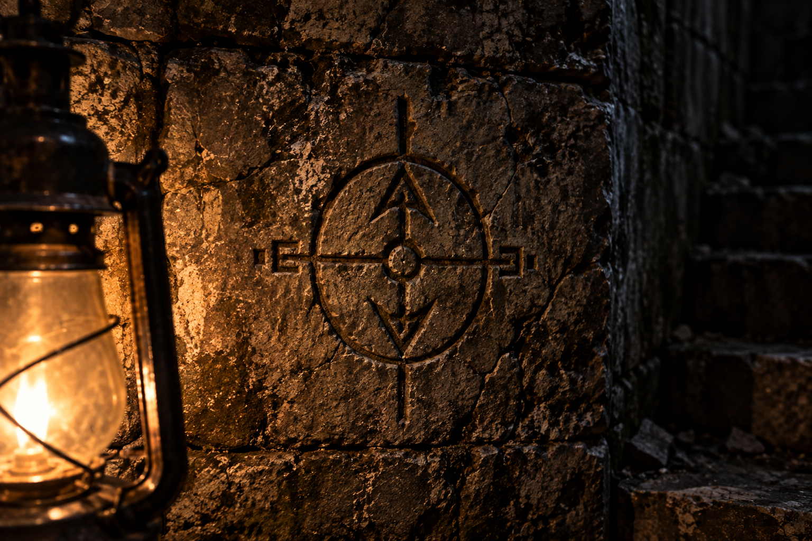
Display S03-HANDOUT-SYMBOL-01 when the landing is illuminated. Its meaning remains unknown.
The symbol's language, builders, culture, meaning, and magic or lack thereof are unresolved. Do not attribute it to any known historical people.
The Blocked Route
Beyond the landing's turn, centuries of collapse choke the route. It cannot be solved with a high-DC roll. Safe progress requires picks, shovels, pry bars, supports, substantial time, and possibly additional labor. Faint airflow may be present, but no source or destination is defined.
The survey instrument continues indicating toward BM-6, not down these stairs. These are separate mysteries.
Leaving Tallow Street
The party may return once it has meaningful Vey material. Record:
- Buildings entered and left untouched.
- Records and salvage taken or abandoned.
- Ragling encounters and the condition of the colony and young.
- Current Attention.
- Whether Sable House remains Sealed, is Disturbed, or is Breached.
- Whether the reliquary was left, taken closed, or opened.
- Which PCs encountered Deepthorn, BM-6, the symbol, or the courtyard stairs.
- What the players choose to disclose to Hutch.
The party returns through the warehouse and the ordinary Harbor District. Stop tracking expedition light when they leave Tallow Street.
Scene 4 — Return to Fool & Fortune
Purpose
Resolve the job, let the players explain what mattered to them, pay them, settle salvage, and offer practical lodging. Do not assign another quest.
Fool & Fortune is warm, inhabited, and illuminated. Hutch is behind the counter doing ordinary work. Look at the characters' actual dust, injuries, torn clothing, and overloaded packs before speaking.
“Well. Look at that.”
“Everybody came back.”
“Come on, then. Put down whatever you've decided is worth carrying.”
Do not begin with “Did you get the maps?” Hutch was not certain they would return.
Player-Led Debrief
Ask:
“What do you show Hutch first?”
React only to what the PCs recovered, noticed, and choose to disclose. Hutch can ask where an object came from and what they left behind. He is knowledgeable, not omniscient.
Conditional Reactions
Use only rows supported by what the PCs recovered and choose to disclose. Hutch may ask where something came from, but he does not know what they withheld.
| Disclosure | Hutch's response | Optional line |
|---|---|---|
| Master Survey | Recognizes professional work, compares it with his copy, and sees that the historical street continued beyond the accessible section. | “Well, I'll be damned. This is what I was hoping existed.” |
| Survey Ledger | Recognizes measurements, boundaries, benchmarks, corrections, and work beyond Tallow Street. | “Oh, this is better. One old map tells you where something was. A surveyor's book tells you where everything around it was.” |
| District Map Case | Becomes focused, opens several maps, and asks where they were found. He needs time to study them; this is not another assignment. | — |
| Field Journal | Values it more if the PCs also explain BM-6, the instrument, or the matching symbol. He does not automatically value it above the maps. | — |
| Survey instrument | Lets the PCs explain that it points down. It remains their salvage unless they negotiate otherwise. | “Compass?” then, “That's inconvenient.” |
| BM-6 — LOWER DATUM | Understands that Vey surveyed something below known street level. He does not know what BM-6 is. | “Good. Means I don't have to tell you you're not going back tonight.” |
| Raglings | Knows they are common Under Hallow scavengers and collectors, dangerous when cornered and fiercely protective of young. He knows nothing about this colony unless told and does not moralize if the PCs fought. | “Then you're lucky you didn't make a war of it.” |
| Deepthorn | Does not recognize a cutting or know its origin. If the PCs supply the name, he accepts it. | “That's alive? Four hundred years underground?” / “Then Deepthorn it is.” |
| Sable House | Treats the bricked building and the Gilded Kraken warning as evidence of containment, not a solved history. | “Probably wasn't bricked up to keep people out.” |
| Reliquary left behind | Approves, based only on the evidence of deliberate sealing. | “Good.” / “Because somebody sealed a house around the damned thing.” |
| Reliquary brought back closed | Does not touch it and wants it off his counter. He knows no containment procedure. | “Tell me you didn't open that.” / “All right. That's something. We're going to need somewhere better than my counter for that.” |
| Reliquary opened | Becomes completely serious. Do not invent a cure, containment procedure, or immediate follow-up adventure. | “What happened?” |
| Necklace or hairpin | Gives an ordinary appraisal. | — |
| Signet ring | Asks where it came from, advises keeping it, and identifies no family, heraldry, or supernatural property. | “Where'd you find this?” / “Keep it.” / “Because I don't know enough about it to tell you what it's worth.” |
| Courtyard stairs | Reconstructs Vey's deliberate omission from the evidence. He does not know why the stairs were hidden or where they lead. | “Surveyor mapped his own courtyard. Found stairs underneath it. Went down them. Then drew a wall where they were. That's not an error.” |
| Ancient symbol | Does not know its meaning or builders. | — |
| Instrument does not point toward the stairs | Treats BM-6 and the stairs as distinct mysteries, not two accessible routes. | “So you've found two ways down.” |
Payment and Salvage
If the party returns with meaningful Vey cartographic material, Hutch pays exactly 10 gp per participating PC.
“You did what I asked. Ten each.”
No technicalities, renegotiation, or separate payment per record.
“What I asked for is mine. What I didn't ask for is yours.”
Hutch does not claim Kraken Black, Marlowe's jewelry, old coins, medicines, Deepthorn, Ragling-cache valuables, unrelated salvage, or the instrument unless the PCs negotiate. He may later help find buyers among collectors, antiquarians, merchants, and questionable specialists. Do not define a brokerage percentage.
If they return without meaningful Vey material, do not pay the recovery fee. Ask what happened and preserve the relationship without punishment.
The Crooked Nail
If the PCs need lodging, Hutch recommends a nearby Harbor District inn and tavern, roughly one or two minutes from Fool & Fortune.
“Two doors down, left at the cooper's. Crooked Nail. Tell Mara Hutch sent you.”
“Actually, don't. She'll charge you more.”
The Crooked Nail is old, slightly crooked, low-ceilinged, worn, clean enough, inexpensive, and active downstairs in the evening. It serves dockworkers, sailors, warehouse workers, tradespeople, modest travelers, and locals. It is not an adventurers' guild and has no quest board or contrived tavern plot.
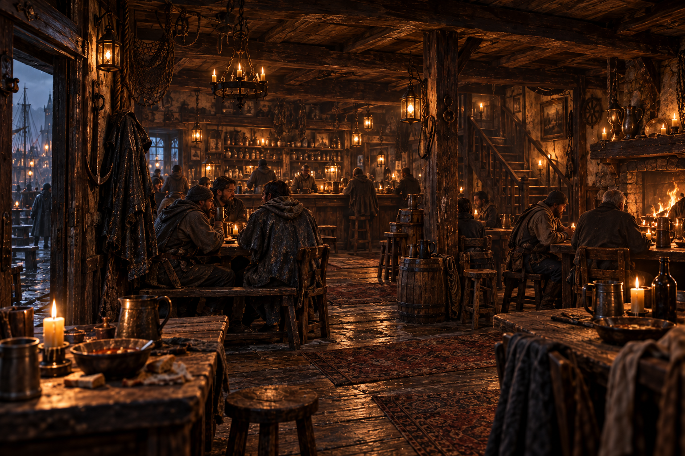
Mara is the proprietor. Do not connect her to the ancient Gilded Kraken “Mara — 7” entry or invent a larger role.
- Rooms: 1 gp per room per night.
- Capacity: two PCs comfortably share one room.
- Food: a simple hot meal is included or inexpensive enough to avoid detailed first-night accounting.
The inn is a practical place to sleep, not a declared campaign base. Let attachment form through play.
Session End
Allow the PCs to get paid, sell or store ordinary salvage if appropriate, ask questions, arrange lodging, eat, drink, sit somewhere warm, and process what happened. Assign no new quest.
If the moment fits, Hutch may say:
“This morning you didn't have a copper between you or a dry pair of boots.”
He taps Vey's map.
“Now you know something about Spyre that almost nobody else does.”
“That's how it starts.”
Do not force the line if play produces a better ending. The PCs finish alive, dry, fed, paid if successful, connected to someone in Spyre, and beginning to understand what it means to delve beneath the city.
Appendix A — Hutch Quick Reference
At a Glance
- Human; late forties to early fifties.
- Weathered, intelligent, likable, funny, observant, socially somewhat seedy.
- Legitimate curiosity, salvage, and antiquities dealer.
- Broker of information, people, access, maps, crews, jobs, and buyers.
- Well connected, but neither sinister nor omniscient.
- Keeps his agreements.
- Begins as a useful local broker and can become a trusted contact; he does not own the PCs' choices.
Knows
- Spyre's working harbor and ordinary people.
- Practical Under Hallow risks.
- Basic Ragling behavior.
- His own job, access agreement, and salvage terms.
- Whatever the PCs tell or show him.
Does Not Know
- Why The Silver Wake sank.
- What BM-6 truly is.
- What the ancient symbol means.
- Which vampire family is tied to the ring.
- Deepthorn's vampiric origin.
- Sable House's full history or a reliquary cure.
- The destination of Vey's omitted stairs.
Essential Lines
| Use | Line |
|---|---|
| Introduction | “First time in Spyre? Most people arrive a little drier. I'm Hutch.” |
| Stranded travelers | “Shipwreck's a funny thing. Yesterday you had somewhere to be. Today you've got nowhere to go.” |
| Shop's name | “Depends whether you're buying or selling.” |
| Under Hallow | “Spyre goes down almost as far as it goes up.” |
| Role | “Middleman.” |
| Salvage | “What I asked for is mine. What I didn't ask for is yours.” |
| Return | “Well. Look at that. Everybody came back.” |
| Debrief | “What do you show Hutch first?” |
| Lodging | “Tell Mara Hutch sent you. Actually, don't. She'll charge you more.” |
Appendix B — Ragling Attention Tracker
Current state:
- 0 — Unaware: evidence only; colony unaware.
- 1 — Curious: scratching, watching, one adult investigates.
- 2 — Following: Raglings shadow the party; adults guard the nest approach.
- 3 — Alarmed: colony expects danger; adults are defensively positioned.
Raise by 1 for loud force, smashing, collapse, sustained hammering, repeated shouting, or combat. Ordinary movement, conversation, doors, and searching add nothing. Extended quiet exploration may reduce by 1. Breaching Sable House sets it directly to 3. It never automatically starts combat.
Appendix C — Ragling Statistics
Ragling
AC 12; HP 4; MV near (climb)
Attack claw/bite +2 (1d4)
Abilities S -2, D +2, C +0, I -3, W +1, Ch -3
Alignment N
Scuttle: Moves through spaces too small for humans and climbs ordinary ruined surfaces without a check.
Skittish: At half HP or less, flees unless defending young.
Collector: Strongly attracted to food and useful nesting material.
Ragling Matron
AC 13; HP 16; MV near (climb)
Attacks 2 claws +3 (1d4 each)
Abilities S +2, D +2, C +2, I -3, W +2, Ch -3
Alignment N
Protective Fury: While defending young, ordinary intimidation does not drive her away.
Pounce: If she moves at least Close before attacking, her first claw deals +1d4 damage on a hit.
Retreat Offered: She does not pursue creatures clearly retreating from the nest unless they carry or threaten a young.
Appendix D — Treasure and Rewards
| Source | Find | Value / slots |
|---|---|---|
| Gilded Kraken | 3 Kraken Black bottles | 10 gp each; 1 slot each |
| Gilded Kraken | Till coins | About 5 gp total |
| Gilded Kraken | Dropped old silver coin | About 2 gp collector value |
| Marlowe's | Silver necklace | 15 gp |
| Marlowe's | Fine hairpin | 10 gp |
| Marlowe's | Signet ring | 25 gp apparent ordinary value; provenance unresolved |
| Broken Compass | Mixed cache | 1d6 gp total |
| Hutch | Successful recovery | 10 gp per participating PC |
For four PCs, extensive exploration can produce approximately 128–133 gp including Hutch's payment. This assumes successful risky recovery, carrying all bottles, and finding appropriate buyers. It is potential value, not automatic cash.
No established GP or XP value applies to the reliquary, Deepthorn, BM-6 information, the ancient symbol, Vey's district maps, or unresolved provenance. Apothecary preparations have utility rather than established sale prices.
Appendix E — Hearth & Thorn Consumables
| Item | Effect |
|---|---|
| Redwort Restorative | Heal 1d6 HP. |
| Viper's Mercy | End one mundane poison immediately. |
| Clearblood Tonic | For 1 hour, advantage on the next CON check against disease or poison. |
| Spoiled Black Draught | DC 12 CON if consumed; failure 1d6 damage, success sickening without damage. |
| Nightroot Elixir | For 1 hour, drinker sees through nonmagical darkness to Near. |
| Deepthorn Cutting | For 10 rounds, perceive living creatures within Near through darkness, but not through solid barriers. Expires about 24 hours after cutting. |
Appendix F — Tallow Street Quick Reference
| Location | Essential clue or choice | Risk | Treasure / objective |
|---|---|---|---|
| Gilded Kraken | “DON'T OPEN THE STREET DOOR”; modern Ragling material | Entry noise; rotten cellar stairs | 37 gp potential |
| Marlowe's | H. Vale note; impossible property number; unidentified ring | Structural extraction | 50 gp apparent value |
| No. 17 | Elsie's marks, PEOPLE NEXT DOOR, shared-wall scratches, complaint | Time and intrusion | No meaningful GP |
| Sable House | Deliberate seal, containment, reliquary | Attention 3; contamination; Bound | No established GP/XP |
| Hearth & Thorn | Medicines and Deepthorn | Spoiled draught; forced cabinet | Five preparations; 1d4 cuttings |
| Broken Compass | Ragling cache, Vey instrument, repair notes | Possible Ragling contact | 1d6 gp; instrument 1 slot |
| Vey's | Recover cartographic material; protect or confront colony | Three adults, young, matron | Job objective; records 1/1/2/small slots |
| Rear courtyard | Survey wall contradicts real stairs; matching symbol | Route requires later excavation | Information only |
Geography
| North, west → east | South, west → east |
|---|---|
| Gilded Kraken | Marlowe's Fine Goods |
| Vey's Charts & Surveys | No. 17 |
| Hearth & Thorn | Sable House / “S.” |
| Broken Compass |
West: warehouse access. East: current collapse.
Appendix G — Player Handout Index
| Trigger | ID | File |
|---|---|---|
| Hutch explains the job | S02-HANDOUT-TALLOW-MAP-01 | 04-tallow_street_map_handout_01.png |
| Master Survey recovered and examined | S03-HANDOUT-VEY-SURVEY-01 | 23-tallow_street_survey.png |
| Courtyard landing illuminated | S03-HANDOUT-SYMBOL-01 | 25-Veys_Symbol.png |
{kind=link}
{kind=link}
{kind=link}
The Hutch map's marginal depth and rebuilding notes are in-world claims. The Master Survey does not define a calendar or the meaning of BM-6. The symbol's interpretation remains unknown.
Appendix H — Media and TV Display Reference
Display only at the stated discovery cue. Do not run an advance slideshow of unrevealed locations.
| Cue | Asset ID | File | Status |
|---|---|---|---|
| First city view after introductions/care | S01-LOC-DOCKS-01 | Spyre harbor | Ready |
| Hutch properly introduced | S01-NPC-HUTCH-01 | Hutch | Ready |
| Enter Fool & Fortune | S02-LOC-FOOL-FORTUNE-01 | Fool & Fortune | Ready |
| Job map revealed | S02-HANDOUT-TALLOW-MAP-01 | Hutch map | Ready |
| Reach buried street | S03-LOC-TALLOW-01 | Tallow Street | Ready; dark storefronts |
| Enter Gilded Kraken | S03-LOC-KRAKEN-01 | Kraken main room | Ready |
| Find cellar warning | S03-LOC-KRAKEN-CELLAR-01 | Kraken cellar | Ready |
| Enter Marlowe's | S03-LOC-MARLOWES-01 | Marlowe's | Ready |
| Enter No. 17 | S03-LOC-SEVENTEEN-01 | No. 17 | Ready |
| Examine Elsie's room | S03-LOC-ELSIE-01 | Elsie's room | Ready |
| Inspect Sable facade | S03-LOC-SABLE-SEALED-01 | Sealed entrance | Ready |
| Enter Sable House | S03-LOC-SABLE-INTERIOR-01 | Sable interior | Ready |
| Find containment room | S03-LOC-SABLE-CONTAINMENT-01 | Containment room | Ready |
| Encounter reliquary | S03-OBJ-RELIQUARY-01 | Reliquary | Ready |
| Reach Hearth & Thorn | S03-LOC-HEARTH-EXTERIOR-01 | Hearth exterior | Ready |
| Enter Hearth & Thorn | S03-LOC-HEARTH-INTERIOR-01 | Hearth interior | Ready |
| Discover Deepthorn | S03-OBJ-DEEPTHORN-01 | Deepthorn | Reveal only when the root is discovered |
| Enter Broken Compass | S03-LOC-COMPASS-01 | Broken Compass | Ready; warm interior lighting |
| First clear Ragling sighting | S03-CRE-RAGLING-01 | Ragling | Reveal only after a clear sighting |
| Approach Vey's | S03-LOC-VEY-EXTERIOR-01 | Vey exterior | Ready |
| Enter Vey's | S03-LOC-VEY-INTERIOR-01 | Vey interior | Ready |
| Reach colony | S03-LOC-VEY-NEST-01 | Ragling archive | Ready |
| Matron appears | S03-CRE-MATRON-01 | Ragling matron | Reveal only if she appears |
| Reach rear courtyard | S03-LOC-VEY-COURTYARD-01 | Buried courtyard | Ready |
| Arrive at The Crooked Nail | S04-LOC-CROOKED-NAIL-01 | The Crooked Nail | Ready |
| Meet Mara | S04-NPC-MARA-01 | Mara | Ready |
{kind=link}
{kind=link}
{kind=link}
{kind=link}
{kind=link}
{kind=link}
{kind=link}
{kind=link}
{kind=link}
{kind=link}
{kind=link}
{kind=link}
{kind=link}
{kind=link}
{kind=link}
{kind=link}
{kind=link}
{kind=link}
{kind=link}
{kind=link}
{kind=link}
{kind=link}
{kind=link}
{kind=link}
{kind=link}
Audio
- Scene 1: S01-AMB-HARBOR-01 —
audio/Medieval Harbor Ambience.mp3. - Scene 2: S02-AMB-FOOL-FORTUNE-01 —
audio/Magical Shop Ambience.mp3. - Scene 3: S03-AMB-TALLOW-01 —
audio/Tallow_Street.mp3, optional and still unaudited. Do not use it if it implies rain, wind, gulls, daylight, or inhabitants.
GM End-State Checklist
- Meaningful possessions and final equipment recorded.
- Alex's PC remains safely at The Lantern House until the player returns.
- Buildings visited and structural damage recorded.
- Final Ragling Attention and colony condition recorded.
- Vey material recovered, retained, and disclosed recorded separately.
- Payment and voluntary salvage transactions recorded.
- Sable containment state and reliquary location recorded.
- Deepthorn, BM-6, instrument, ring, stairs, and symbol marked only if discovered.
- Lodging offered or declined; room cost paid if used.
- No new quest assigned.
Deliberately Unresolved
Do not resolve or select a canonical next plot from:
- BM-6 or the instrument's deeper destination.
- Vey's omitted stairs and the route below the collapse.
- The ancient symbol's builders or meaning.
- The origin of Sable House's reliquary.
- Long-term Bound consequences or cure.
- The vampire family tied to Marlowe's signet ring.
- The identity of the vampire tied to Deepthorn's parent tree.
- Locations shown on Vey's wider maps.